독한 화학 락스는 단 1g도 쓰지 않습니다.
천연 소금 전기분해 100% 친환경 해수풀에서 아이 피부부터 어른 건강까지 완벽하게 지켜드립니다.
가까운 지점을 선택하고 바로 확인하세요
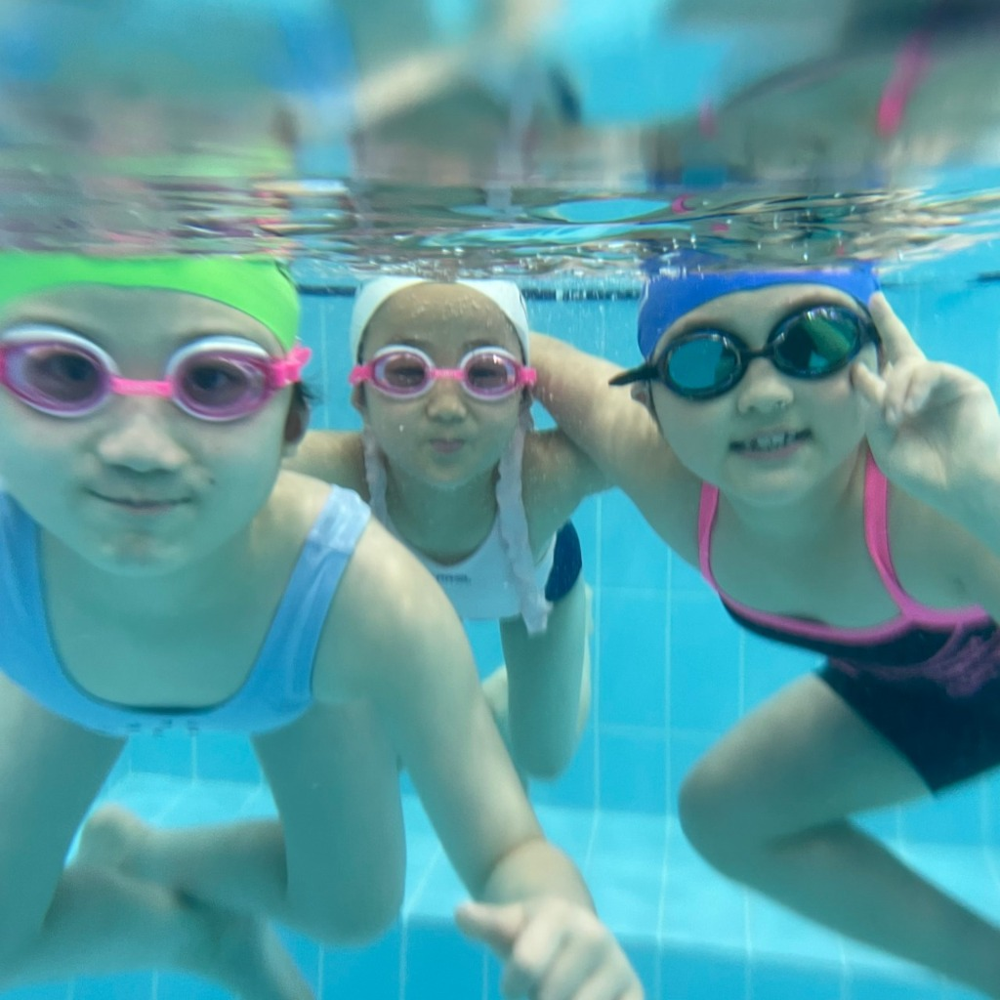
눈 안 시린 맑은 물 🫧
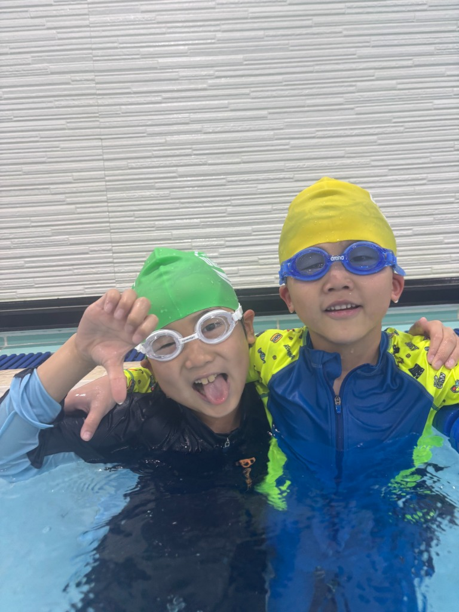
친구랑 신나게! ✌️
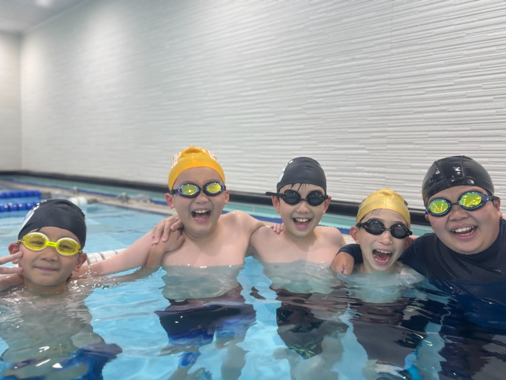
어반 패밀리 스마일 😊
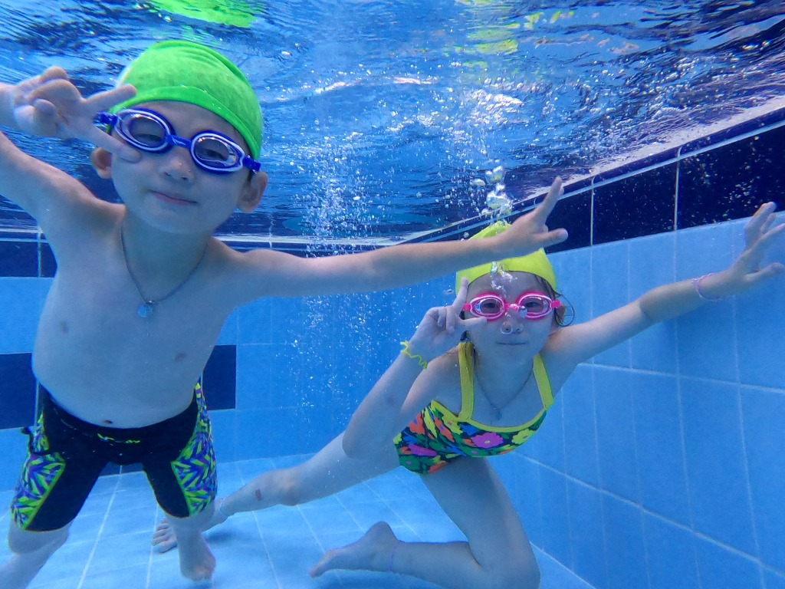
물속이 신나는 놀이터 🏊
눈이 따갑고 피부가 가려운 수영장은 이제 그만. 어반은 화학약품 소독 대신 인체 체액과 동일한 천연 소금 전기분해를 고집합니다.
인공 염소 락스를 전혀 첨가하지 않고 천연 소금을 전기분해하여 복합 살균합니다. 눈 시림, 아토피, 수영 후 특유의 독한 소독약 냄새 걱정이 전혀 없습니다.
탈의부터 샤워, 꼼꼼한 머리 말리기, 안전한 셔틀 승하차까지 전문 선생님이 처음부터 끝까지 정성으로 밀착 케어하여 학부모님의 손길을 덜어드립니다.
아이들도 성인도 추위와 감기 걱정 없이 1년 365일 체온을 보호해 주는 32~33℃ 친환경 온수로 쾌적하고 건강하게 수영을 즐길 수 있습니다.
교육과 놀이를 결합한 어반만의 독보적인 친환경 수질 관리와 유아·어린이 생존 수영 교육을 직접 확인하세요.
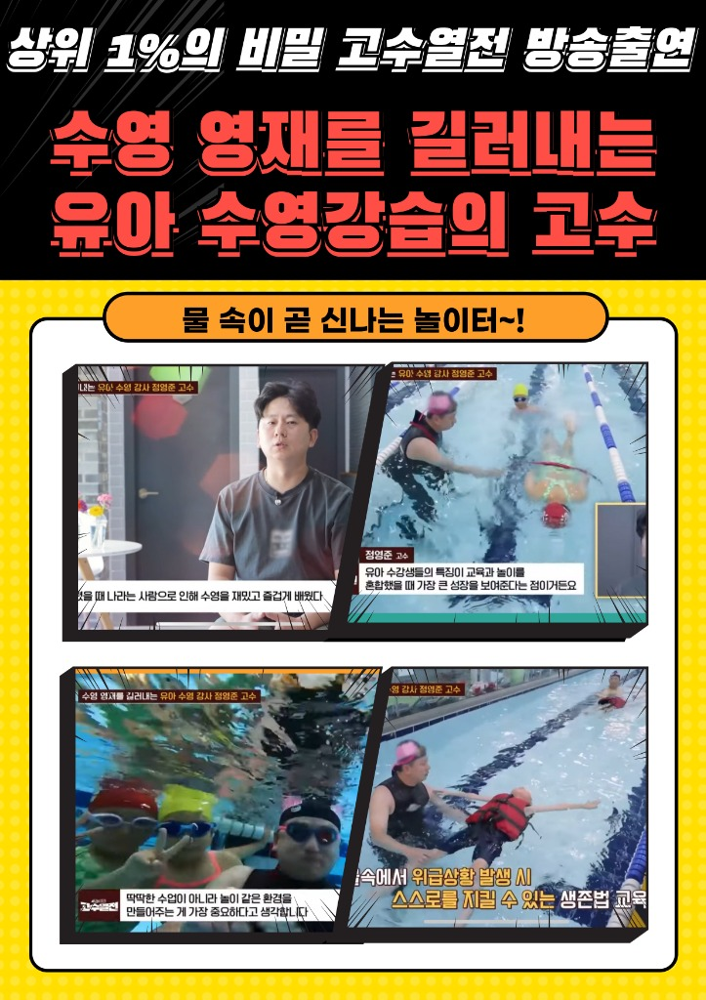
형식적인 물놀이식 수업이 아닙니다. 어반수영장은 생존수영 지도 자격증을 소유한 검증된 전문 선생님들이 실제 해상 위기 상황에서 가장 결정적인 도움이 되는 핵심 기술들을 체계적이고 안전하게 교육합니다.
전문 자격증을 보유한 지도자가 아이들의 눈높이에 맞춰 위기 대처 이론과 안전 수칙을 철저하게 1:1 맞춤 지도합니다.
구명조끼 착용 후 원형으로 모여 저체온증을 방지하고 구조대를 안전하게 기다리는 실전 대형 부유 기술을 체득합니다.
책이나 영상이 아닌 실제 해상용 구명뗏목을 풀장에 띄워 승하선 및 비상 탈출을 직접 몸으로 익히는 실전형 모의 훈련입니다.
이론 안전 교육부터 풀장 집단 부유, 구명뗏목 탈출까지 전 과정 실습
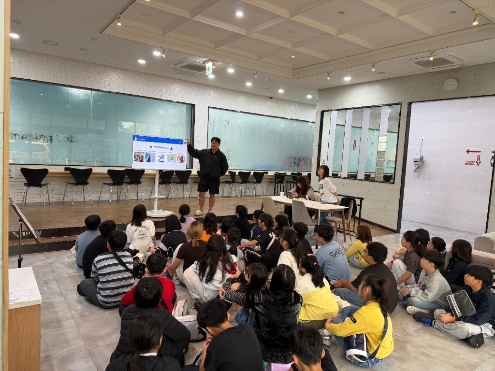
사전 안전 & 위기대처 이론 교육
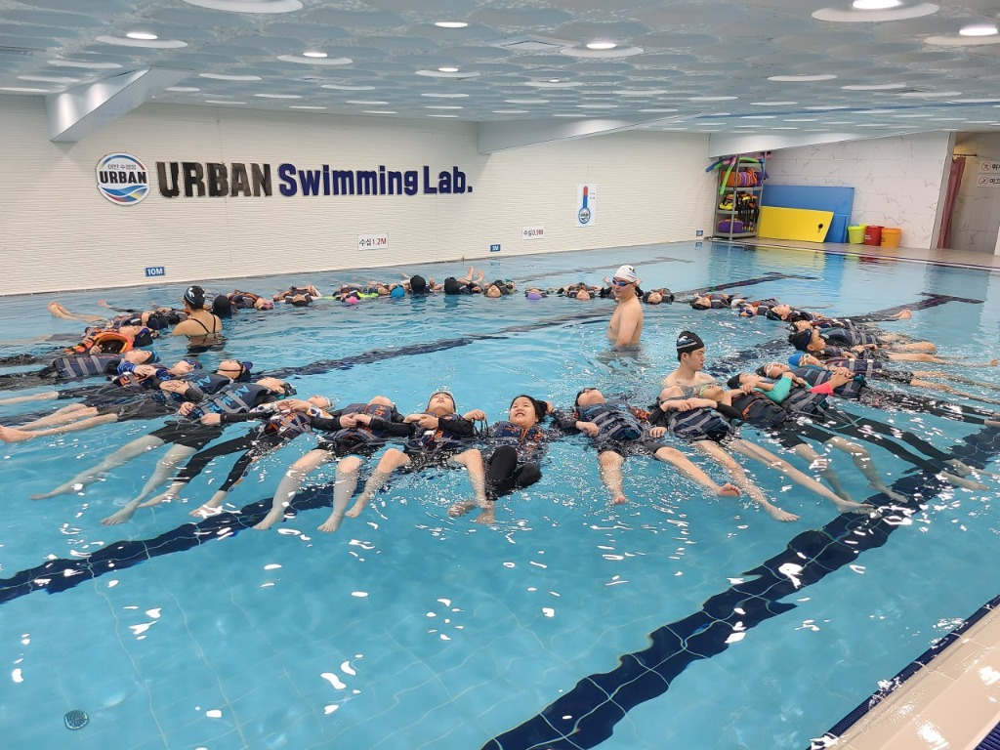
체온유지 원형 집단 부유 훈련
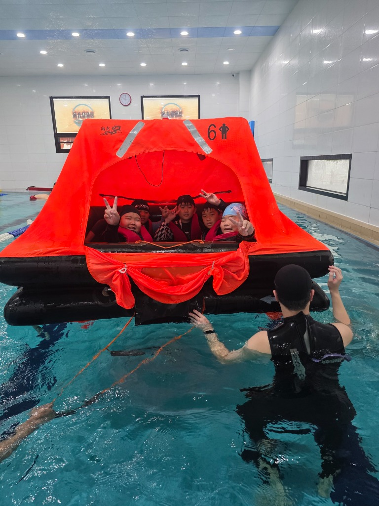
해상 구명뗏목 실제 승선 실습
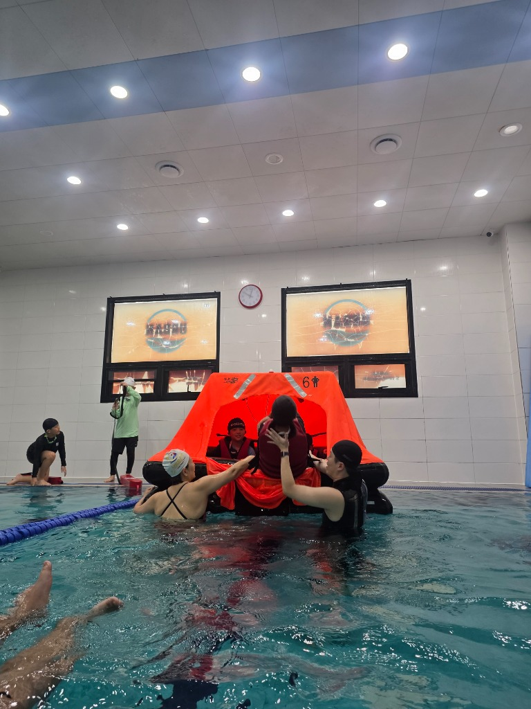
전문 강사진 밀착 비상 탈출 지도
연령과 실력에 맞춘 세분화된 레슨으로 기초 생존 수영부터 마스터즈 대회 준비까지 함께합니다.
물을 무서워하는 아이도 게임형 놀이 수업으로 자연스럽게 물과 친해지고 부력과 호흡법을 배웁니다.
• 정원: 기본 1:5 소수정예 (봉선점 1:4)
• 대상: 6세부터 중학생까지 수강 가능
자유형, 배영, 평영, 접영의 정확한 폼을 익히고 폐활량과 지구력을 기르는 체계적인 단계별 강습입니다.
• 정원: 기본 1:5 집중 레슨 (봉선점 1:4)
• 대상: 6세부터 중학생까지 수강 가능
전국 및 지역 수영대회 출전을 목표로 스타트, 턴, 기록 단축을 전문 지도자가 체계적으로 훈련하는 심화반입니다.
• 정원: 선발 테스트 및 맞춤 훈련
• 전문 지도자의 대회 규정 및 기록 단축 집중 코칭
나주시장배, 화순적벽배 등 수영대회 출전 및 메달 획득 순간
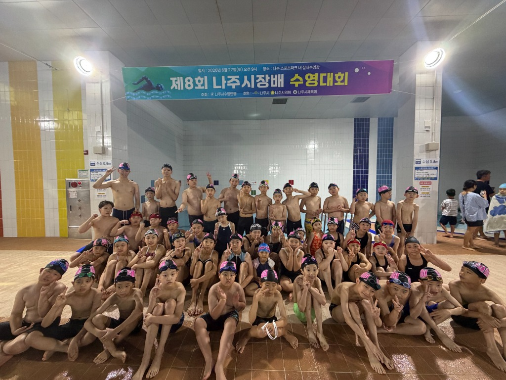
제8회 나주시장배 수영대회
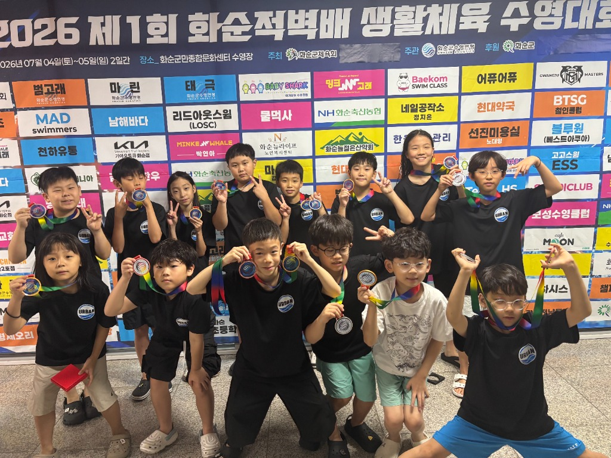
화순적벽배 메달 획득 🏅
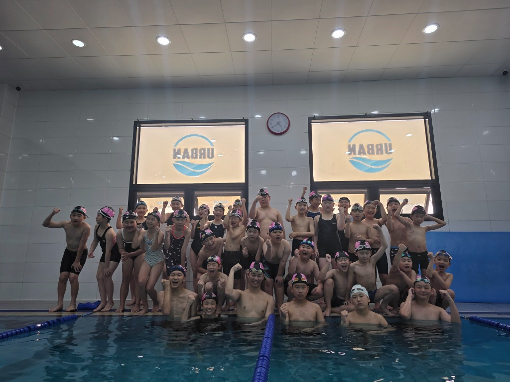
나주시장배 단체 훈련
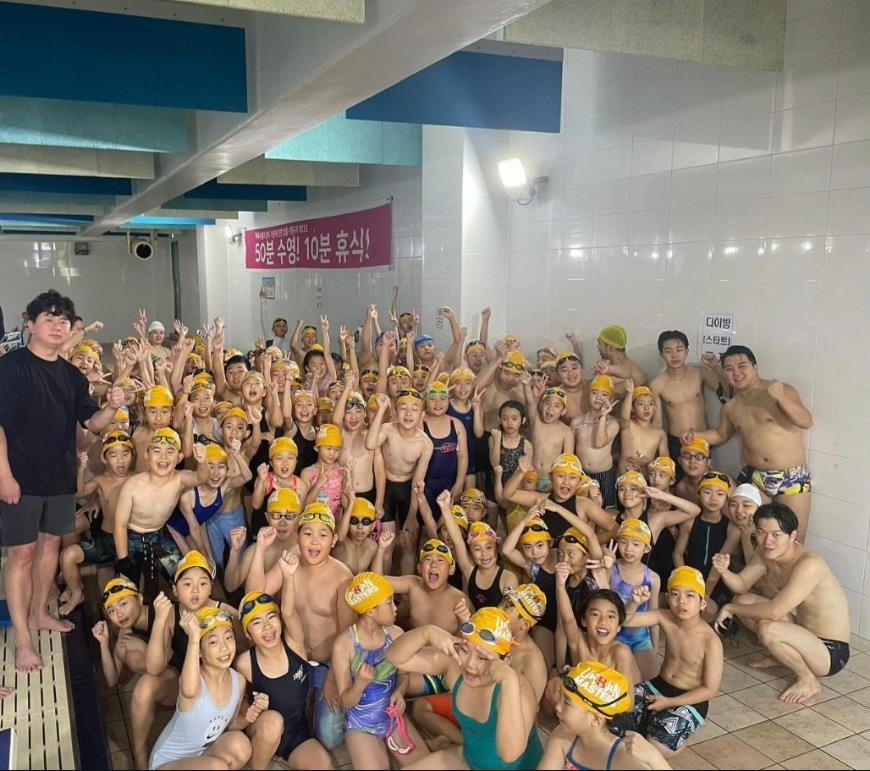
광주 교육감배 단체훈련
출근 전, 퇴근 후 맑은 해수풀에서 상쾌하게 하루를 시작하고 마무리하는 성인 입문 클래스입니다.
• 대상: 물 공포 극복 및 기초 수영 희망 성인
• 지점별 운영 시간 상이
올바른 수영 영법 자세를 정밀 교정하고 코어 근육과 심폐 지구력을 강화하는 성인 강습입니다.
• 대상: 기본 영법 가능자 및 체력 증진 희망자
• 맞춤 스트로크 및 호흡법 교정
체계적인 인터벌 훈련과 장거리 수영, 아마추어 대회 출전을 준비하는 성인 고급 레슨입니다.
• 대상: 4대 영법 완주 숙련자
• 어반 성인 마스터즈 정기 훈련
화학 락스를 전혀 쓰지 않는 100% 친환경 천연 해수풀로, 피부가 민감한 아이부터 쾌적한 운동 환경을 원하는 어른까지 온 가족이 안심하고 다닐 수 있습니다.
• 눈 시림 없는 0.9% 체액 염도 친환경 수질 관리
추운 겨울철에도 감기 걱정 없이 온 가족이 수영을 즐길 수 있도록 사계절 내내 최적의 온수(32~33℃)를 유지하여 체온을 안전하게 보호합니다.
• 아이들 감기 걱정 없는 쾌적한 실내 온습도 시스템
궁금하신 강습 시간표, 셔틀버스 노선, 1회 체험 가능 여부를 해당 지점 직통 전화로 친절하게 안내해 드립니다.
전남광주통합특별시 나주시 빛가람로 838 주4동
전남광주통합특별시 남구 봉선로52번길 14 (주월동)
전남광주통합특별시 북구 연양로67번길 21
전남광주통합특별시 북구 동문대로248번길 48
전남광주통합특별시 남구 임암길 173
거주하시는 아파트나 학교 위치를 알려주시면 가장 가까운 지점과 최적의 셔틀버스 정류장 및 시간표를 친절히 안내해 드립니다.
광주·나주 5개 거점 직영/가맹 네트워크
"아이가 아토피가 심해서 다른 수영장은 락스 냄새 때문에 한 번 가고 그만뒀는데, 어반은 해수풀이라 수영하고 와도 피부 가려움이 전혀 없어요! 생존수영 시간에 구명뗏목 타는 훈련도 너무 유익했습니다."
"대회 나갈 때 검정 바탕에 핑크색 어반 수모 쓴 선수들 보고 멋있어서 등록했어요. 성인반 저녁 타임 수질도 정말 깨끗하고 강사님이 자세 하나하나 친절하게 잡아주셔서 기록이 많이 줄었습니다."
"물이 32도 온수라서 겨울에도 아이 감기 걱정이 없어요. 왜 방송(고수열전)에 나올 만큼 유명한지 직접 다녀보니 알겠네요. 셔틀버스 기사님과 인솔 선생님도 너무 친절하십니다."
어반수영장 수강과 관련해 학부모님과 회원님들께서 가장 자주 문의하시는 질문들을 모았습니다.